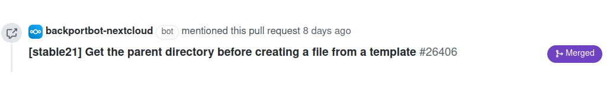

Patching Nextcloud
Obtaining a patch
If you found a related pull request on GitHub that solves your issue, or you want to help developers and verify a fix works, you can get a patch for the pull request.
Using https://github.com/nextcloud/server/pull/26396 as an example.
Append
.diffto the URL: https://github.com/nextcloud/server/pull/26396.diffDownload the patch to your server e.g. via
wget https://github.com/nextcloud/server/pull/26396.diff(this will place26396.diffin the local directory)Follow the Applying a patch steps.
If you are on an older Nextcloud version, you might first need to go to the correct backported patch for your version.

You can find the appropriate version by looking for a link posted by
backportbot-nextcloudto the backport pull request for your release, or by checking for a developer comment with a manual backport link. Use the.diffURL of that backport PR.
Applying a patch
Patching server
Navigate to your Nextcloud server’s root directory (the one that contains the
status.phpfile).Download the patch to your server e.g. via
wget https://github.com/nextcloud/server/pull/26396.diff(this will place26396.diffin the local directory)Apply the patch with the following command:
patch -p 1 < ./26396.diff
Alternatively, if the patch command is not available, use:
git apply --check ./26396.diff git apply ./26396.diff
Patching apps
Navigate to the root of the app (usually
apps/[APPID]/). If you cannot find the app there, use thesudo -E -u www-data php occ app:getpath APPIDcommand to find the path.Download the patch to your server e.g. via
wget https://github.com/nextcloud/<app>/pull/26396.diff(this will place26396.diffin the local directory)Apply the patch with the same command as in Patching server.
Reverting a patch
Navigate to the directory where you applied the patch.
Now revert the patch with the
-Roption:patch -R -p 1 < ./26396.diff
Alternatively, if the patch command is not available, use:
git apply --reverse ./26396.diff
Notes and troubleshooting
If you found a related pull request on GitHub that solves your issue, or you want to help developers and verify a fix works, you can get a patch for the pull request.
Using https://github.com/nextcloud/server/pull/26396 as an example.
Append
.patchto the URL: https://github.com/nextcloud/server/pull/26396.patchDownload the patch to your server and follow the Applying a patch steps.
In case you are on an older version, you might first need to go the the correct version of the patch.
You can find it by looking for a link by the
backportbot-nextcloudor a developer will leave a manual comment about the backport to an older Nextcloud version. For the example above you the pull request for Nextcloud 21 is at https://github.com/nextcloud/server/pull/26406 and the patch at https://github.com/nextcloud/server/pull/26406.patch